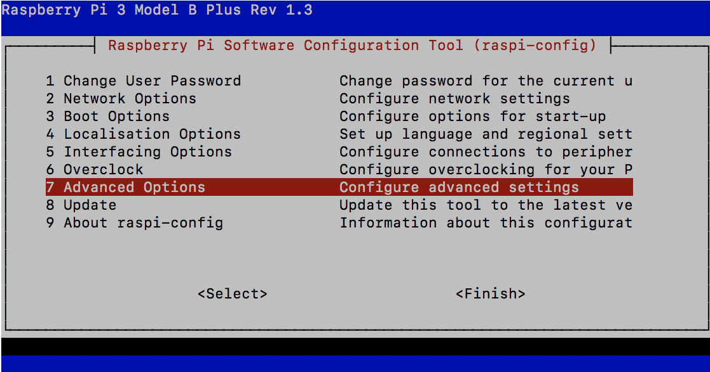
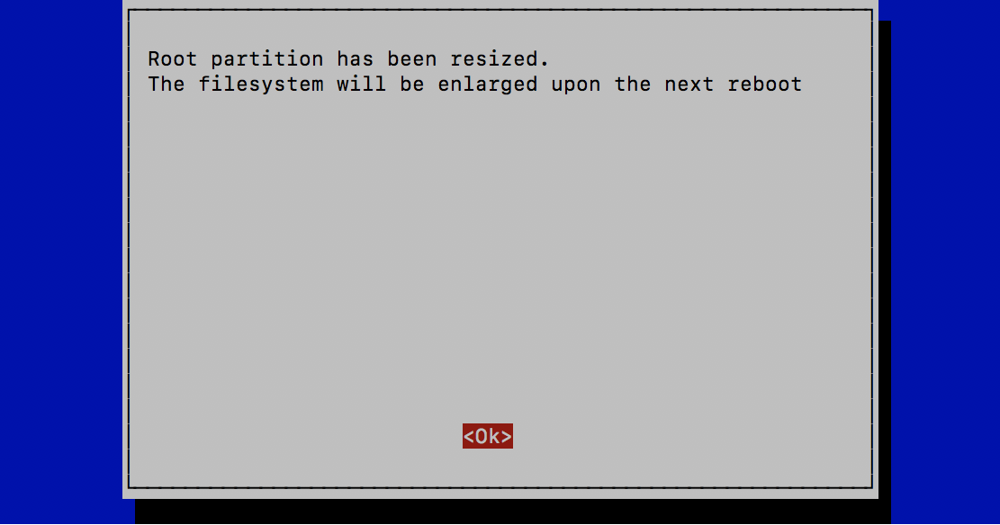

DonkeyCarのインストール
RaspberryPi3へのログイン
Windowsユーザは、ssh pi@IPアドレスで、OSXユーザは、ssh pi@donkeypi-命名した名前.localで、ログインしてください。
SDカード容量を増やす
RaspberryPi3のConfigを起動します。
1 | sudo raspi-config |



dfコマンドでファイルの空き容量を確認します。
1 | df |
結果
1 2 3 4 5 6 7 8 9 | Filesystem 1K-blocks Used Available Use% Mounted on /dev/root 29712700 1968580 26519276 7% / devtmpfs 443728 0 443728 0% /dev tmpfs 448336 0 448336 0% /dev/shm tmpfs 448336 11596 436740 3% /run tmpfs 5120 4 5116 1% /run/lock tmpfs 448336 0 448336 0% /sys/fs/cgroup /dev/mmcblk0p1 43436 22141 21295 51% /boot tmpfs 89664 0 89664 0% /run/user/1000 |
DonkeyCarのUpdate
DonkeyCarをUpdadeします。
1 2 3 4 | pip install donkeycar[pi] python -c "import donkeycar as dk; print(dk.__version__)" using donkey v2.5.8 ... 2.5.8 |
TensorFlowのUpdate
Google ColabでのCUDAのVersionに合わせるために、RaspberryPi側も、TensorFlow 2.0.0-Beta1にUpdateします。
Googleの公式版のTensorFlowレポジトリのRaspberryPi3対応版は、最新版に対応していないために、PINTO0309さんによりBuildをかけて公開されている2.0.0 Beta1をインストールして使用します。
| Package | Version |
|---|---|
| TensorFlow | 2.0.0-Beta1 |
TensorFlow 2.0.0-Beta1をwgetコマンドで取得します。
1 | wget https://github.com/PINTO0309/Tensorflow-bin/raw/master/tensorflow-2.0.0b1-cp37-cp37m-linux_armv7l.whl |
TensorFlow 2.0.0-Beta1をインストールします。
1 | pip install tensorflow-2.0.0b1-cp37-cp37m-linux_armv7l.whl |
pip listでインストールしたVersionを確認します。
1 2 | pip list | grep -i -e keras -e tensorflow tensorflow 2.0.0-Beta1 |